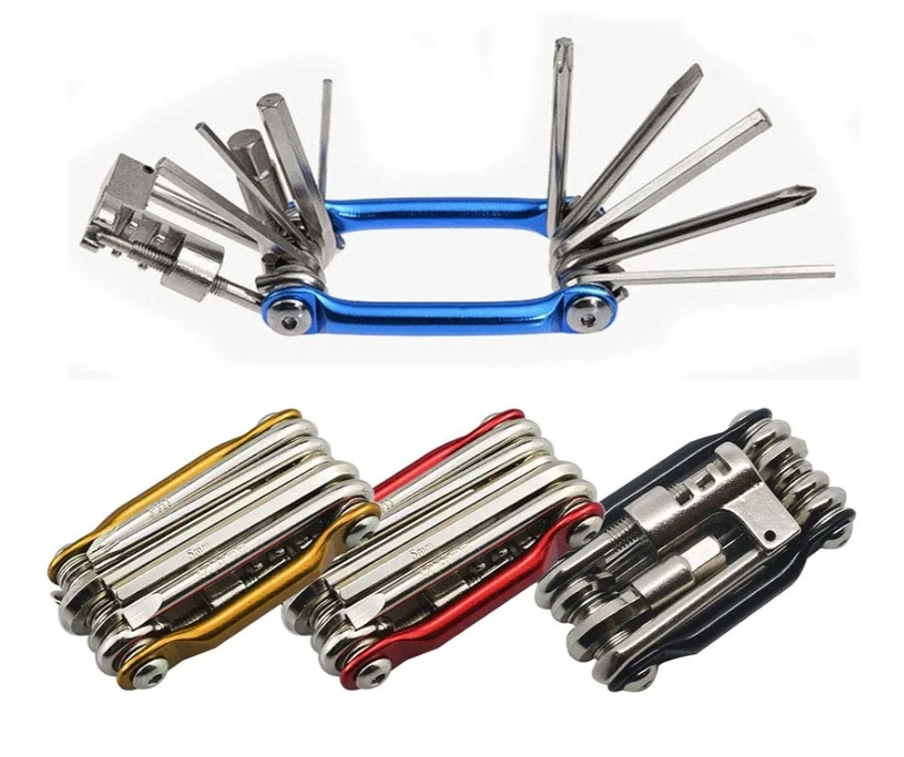
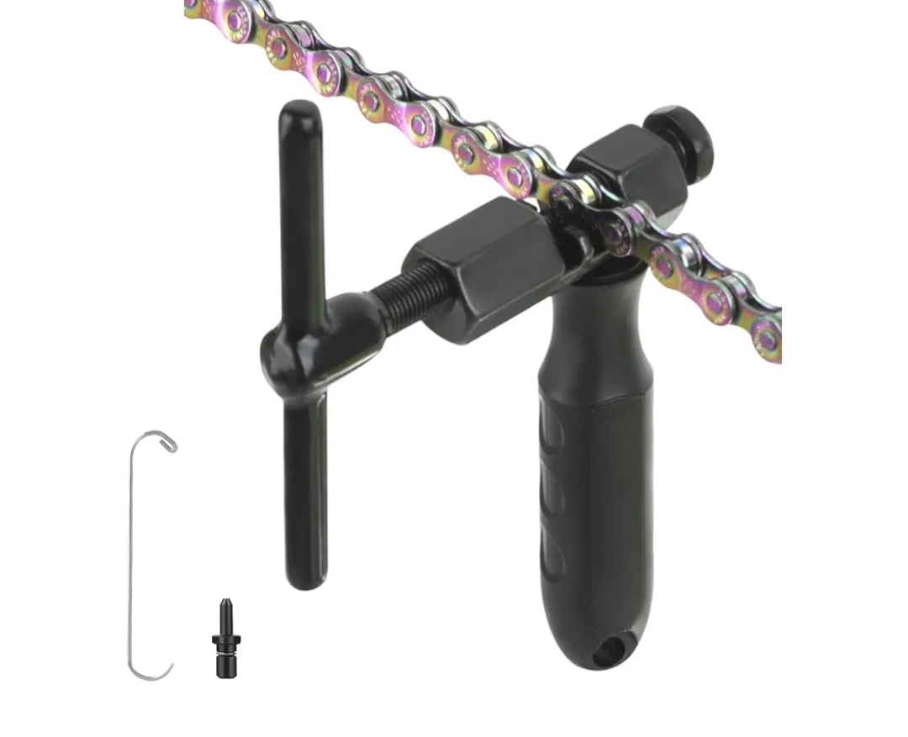
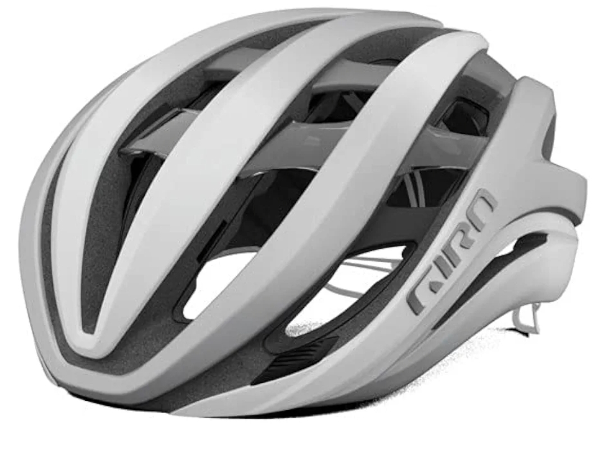
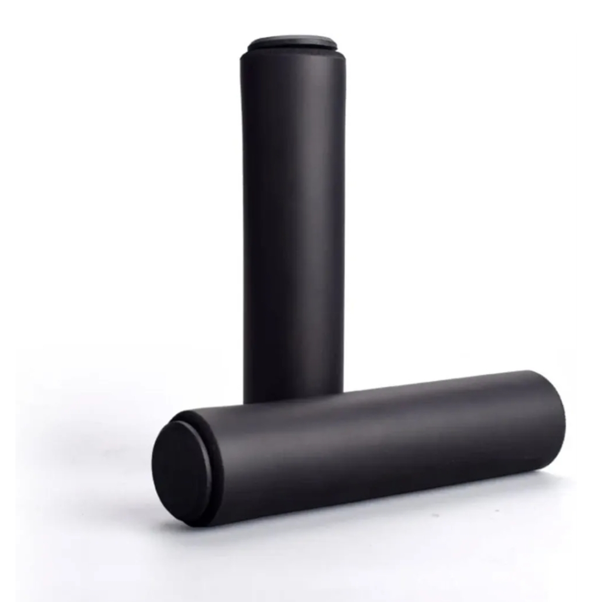
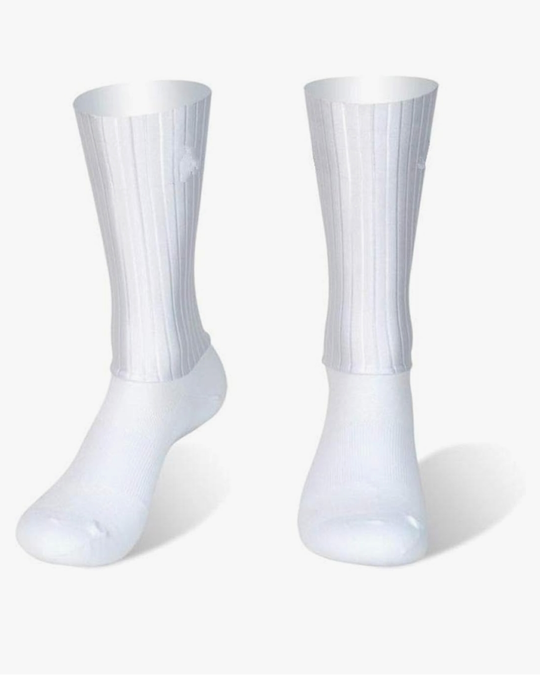
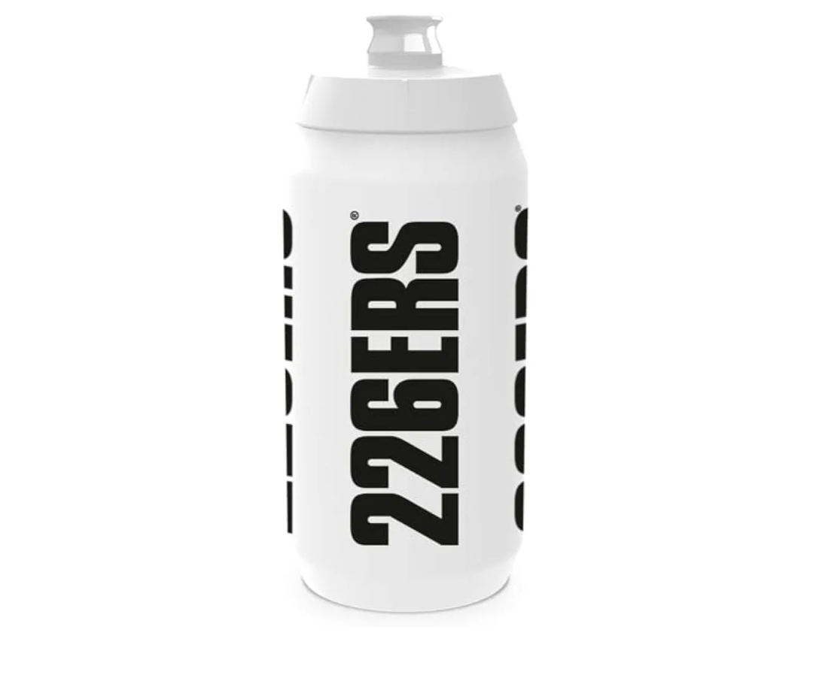
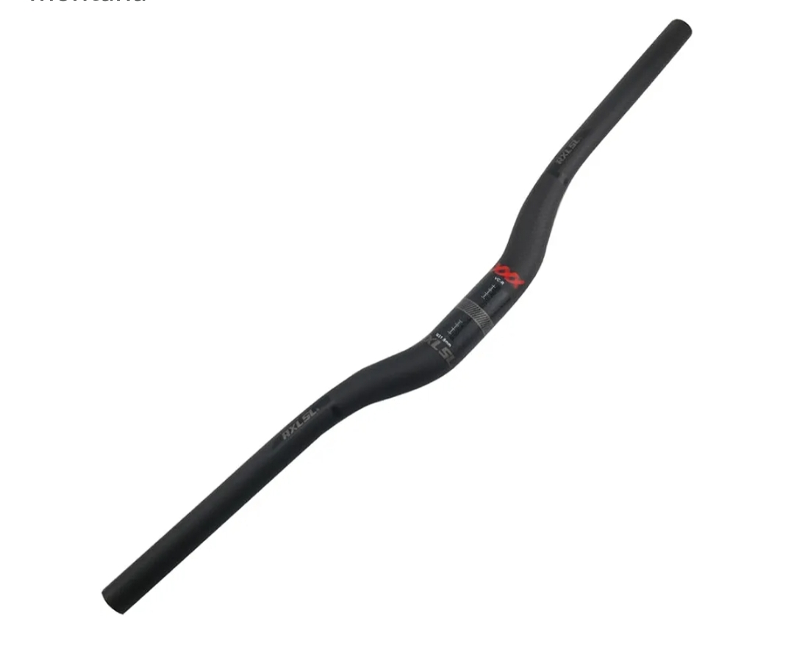
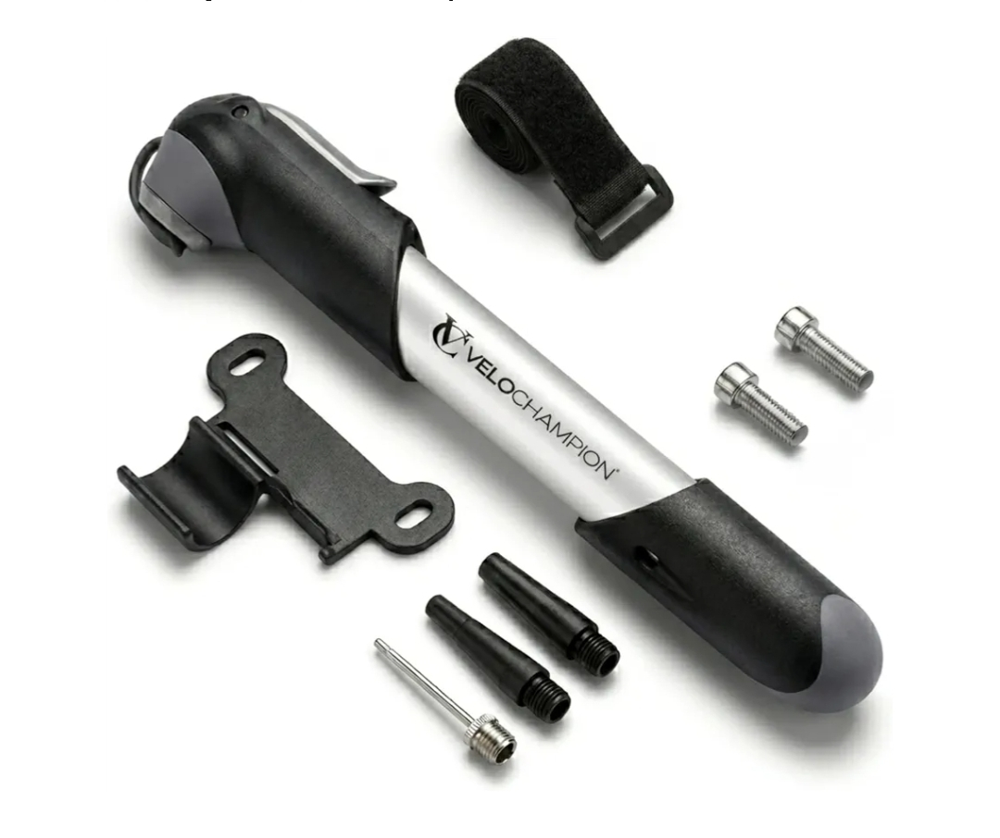
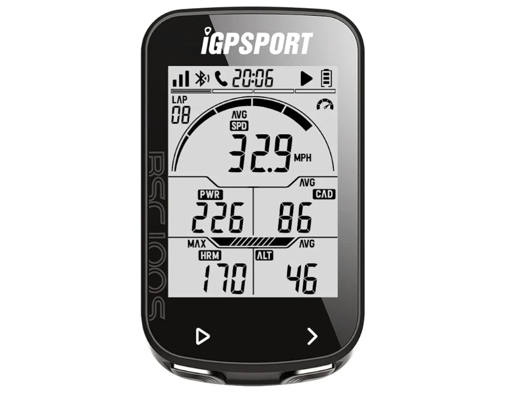
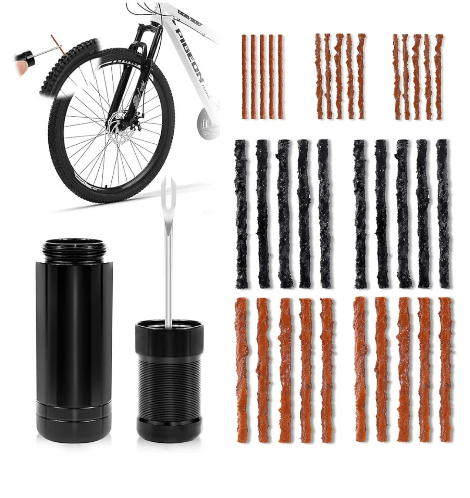

Selección real de GoMTB. Productos probados en ruta, sin inventos. La web oficial para verificación de afiliados.
VER PRODUCTOSFotos reales subidas como 1.jpg a 10.jpg - Selección GoMTB

Imprescindible en cada salida. Llaves Allen, destornilladores y tronchacadenas integrado.

Repara tu cadena en ruta en menos de 2 minutos. Compacto y ligero.

Máxima protección con tecnología Spherical. Seguridad Pro.

Ergonómicos, antideslizantes y con absorción de vibraciones.

Aerodinámica y transpirabilidad para mejorar cada watt.

Hidratación de alto rendimiento. Sin fugas, fácil de limpiar.

Ligereza, rigidez y absorción de vibraciones para MTB.

130 PSI en tu bolsillo. Compatible Presta y Schrader.

Ciclocomputador GPS con altimetría y batería de 40h.

Repara pinchazos tubeless sin desmontar la rueda.
Dominio: https://gonsalitomtb.github.io/gomtb-bikeproducts
Esta web participa en el Programa de Afiliados de Amazon EU. Como afiliado, obtengo ingresos por compras adscritas que cumplan los requisitos.
Propietario: GoMTB - Proyecto de divulgación ciclista.
No recogemos datos personales. Solo usamos cookies de terceros (Amazon) para rastrear afiliaciones. Puedes borrar las cookies desde tu navegador.
Usamos cookies de afiliado para verificar compras. No hay cookies publicitarias propias.